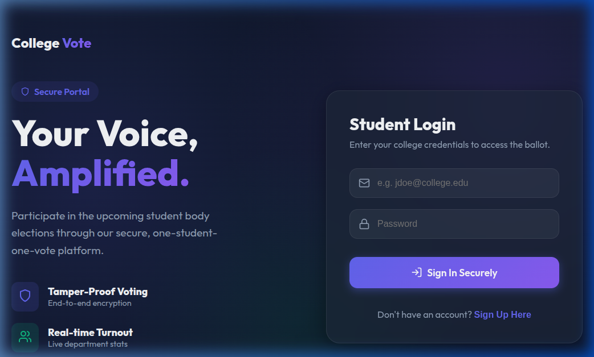
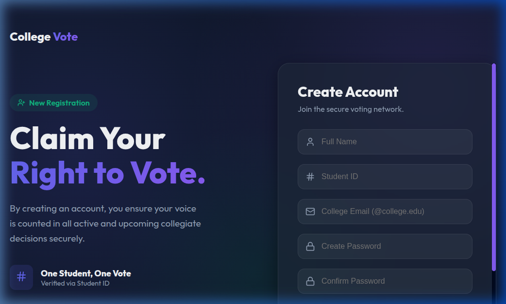
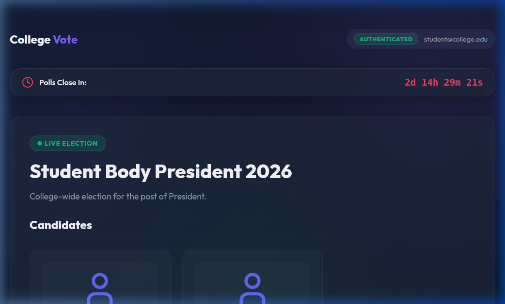
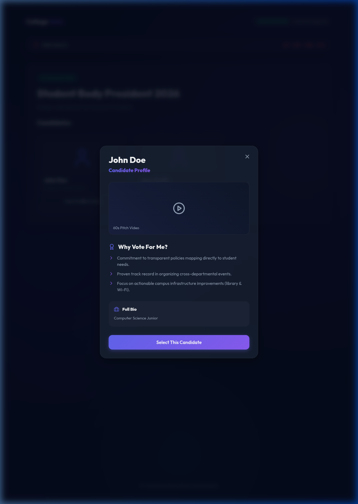
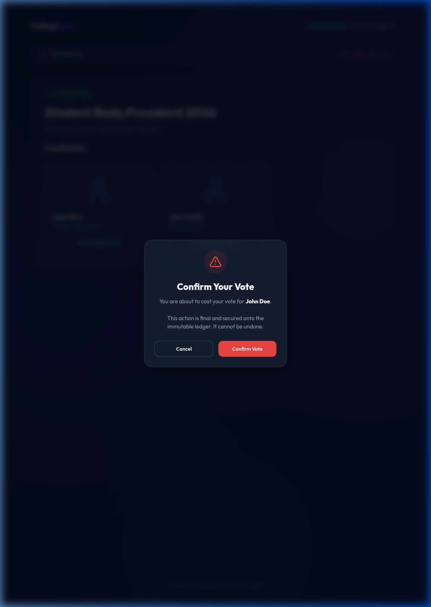
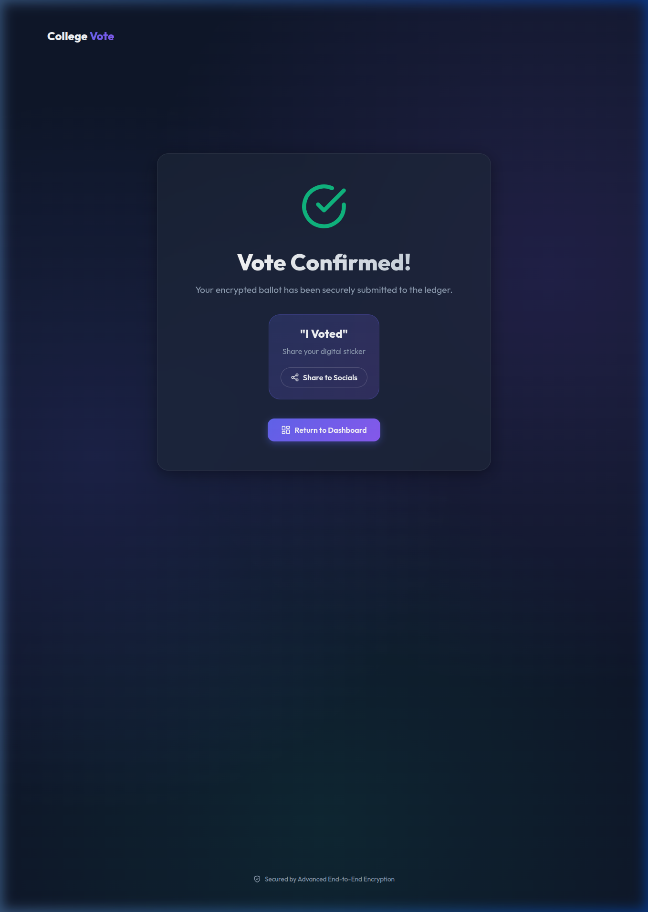
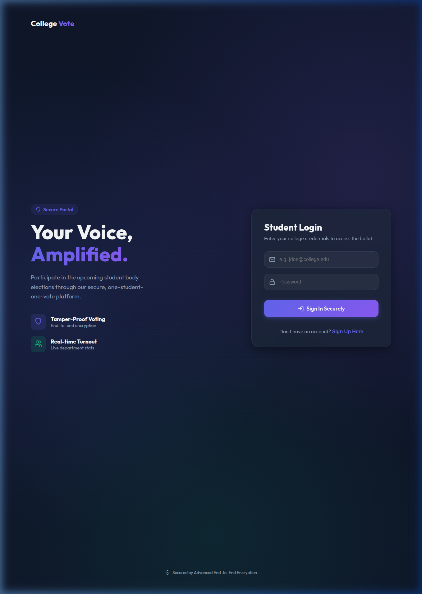

Elevating Student Elections through Modern Technology
Atomic operations to ensure "One Student, One Vote" with zero race conditions.
Modern, high-end UI using glassmorphism and fluid micro-animations.
Real-time participation metrics for administrators without compromising anonymity.
Lightweight architecture capable of handling thousands of concurrent voters.
Secure login with college-specific email authentication (@college.edu)

Quick onboarding for new student voters

Crystal clear election information and candidate profiles

Read about candidate bios before casting your vote

Two-step verification to prevent accidental voting

Immediate feedback with engaging visual celebrations

Real-time analytics and live results dashboard

Ensuring Transactional Integrity:
const updated = await Election.findOneAndUpdate(
{
_id: electionId,
votersParticipated: { $ne: studentId }
},
{
$push: { votersParticipated: studentId },
$inc: { "candidates.$[elem].voteCount": 1 }
},
{
arrayFilters: [{ "elem._id": candidateId }]
}
);
This atomic query prevents a student from voting twice even if they trigger multiple simultaneous requests.
Moving towards a decentralized immutable ledger for audit proof.
Integrating fingerprint/face recognition for high-security 2FA.
Deep sentiment analysis and department turnout predictions.
Questions?